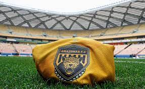
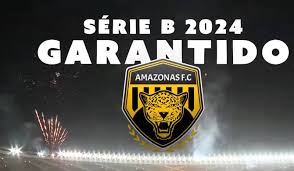
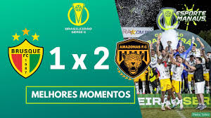
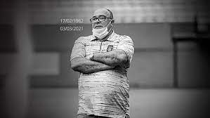

Conheça o Amazonas: Campeão da Série C e com Sassá de destaque, time de 4 anos jogará a Série B 2024
Equipe de Manaus tem no escudo as cores e a imagem da Onça-Pintada
Neste domingo, venceu o Brusque e levantou a taça do Brasileirão, conquista inédita para o futebol amazonense.

Foram 17 anos sem um time do Amazonas na Série B do Brasileiro, mas em 2024 um clube jovem vai encerrar esse jejum.
Com o nome do estado, a equipe garantiu o acesso e disputará a segunda divisão nacional no ano que vem.
De quebra, levantou a taça de campeão da competição, uma conquista inédita para o futebol amazonense.

O título ocorre neste domingo após vencer de virada o Brusque, por 2 a 1, no interior de Santa Catarina,
na partida de volta da final - na ida havia empado em 0 a 0, na Arena da Amazônia.
O acesso veio duas semanas antes. No último dia 7, a equipe garantiu a vaga na Série B, ao vencer o Botafogo-PB em casa,
por 2 a 0, sob os olhares de 44.509 pessoas na Arena da Amazônia. Foi o segundo maior público da história do estádio,
à frente até das partidas da Copa do Mundo de 2014. Vamos alguns pontos que resumem quem é esse time que disputará a segunda divisão.

Tudo começou na zona Leste de Manaus...
Região mais populosa da capital amazonense, a zona Leste não era identificada com nenhum clube. Até que no dia 23 de maio de 2019
foi fundado o Amazonas Futebol Clube. A equipe disputou a Série B do Estadual naquele ano e se sagrou campeã ao vencer o São Raimundo-AM na decisão.
A equipe disputou a Série A do Amazonense só em 2021, devido à pandemia de Covid-19. Naquele ano, a Federação Amazonense de Futebol organizou dois Estaduais,
um deles sendo o de 2020. Neste, a Onça era treinada por Ruy Scarpino.
Antes de um jogo, Ruy teve um mal súbito e foi levado ao hospital, com a suspeita de estar com Covid. Um mês depois, no dia 3 de março de 2021,
ele morreu por causa do vírus. Abalada, a equipe não conseguiu chegar às finais do Estadual.

A equipe só conseguiu superar a perda do ex-treinador no Amazonense 2021, quando terminou a primeira fase na terceira posição
e garantiu vaga na Série D 2022. O clube, mais uma vez, não alcançou a decisão.
Em 2022, logo no primeiro ano em competições nacionais, o Amazonas fez história. O time teve a terceira melhor campanha
e conquistou o acesso ao vencer a Portuguesa-RJ. No jogo de ida, as equipes empataram por 1 a 1 no Rio de Janeiro.
Em Manaus, vitória da Onça por 3 a 2. O Amazonas começou a temporada 2023 com o título amazonense, o primeiro de sua história.
Foram 14 jogos, com 10 vitórias, três empates e uma derrota. Na final, o clube venceu o Manauara por 1 a 0 e ficou com a taça.
>
SITE DE INSPIRAÇÃO